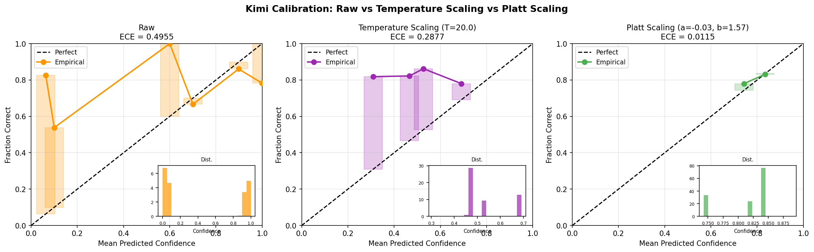

研究问题与设计
研究问题
大语言模型在复杂推理任务中往往输出不可靠的置信度。本研究关注以下问题：
- 模型的置信度是否与真实正确率一致？
- 不同语言与推理模式是否影响校准表现？
- 能否通过后处理方法提升模型的校准能力？
实验设计
本研究采用2（模型：DeepSeek-V3、Kimi-k1.5）× 2（语言：英语、中文）× 3（推理模式：直接回答、思维链、反思）混合因素设计，共施测7198道推理任务，涵盖逻辑推理与数学问题求解领域。
方法

本研究采用2（模型：DeepSeek-V3、Kimi-k1.5）× 2（语言：英语、中文）× 3（推理模式：直接回答、思维链、反思）混合因素设计。共施测7198道推理任务，涵盖逻辑推理与数学问题求解领域。模型在输出答案的同时报告置信度分数。使用期望校准误差（ECE）量化校准表现。采用三因素方差分析检验主效应与交互作用。通过Platt Scaling评估后处理校准改进效果。
结果
准确率分析

仅模型效应显著（F(1,7189)=185.4, p<.001）。DeepSeek（92.2%）显著高于 Kimi（81.4%）。
元认知偏差

DeepSeek：Bias 接近 0。Kimi：持续负偏差，Reflection 条件下扩大（-0.24 → -0.55）。
校准误差

- DeepSeek：ECE = 0.029–0.073（高可靠）
- Kimi：ECE = 0.317–0.609（严重失准）
校准改进

Platt Scaling：ECE 0.4955 → 0.0115（改善率 97.7%）
结论
大语言模型在推理任务中存在系统性元认知偏差，其置信度不能直接反映真实能力。通过简单的后处理方法可以显著改善校准表现。
意义
该研究为提升大语言模型的可靠性提供了可行路径，对高风险应用场景（如决策支持系统）具有重要意义。